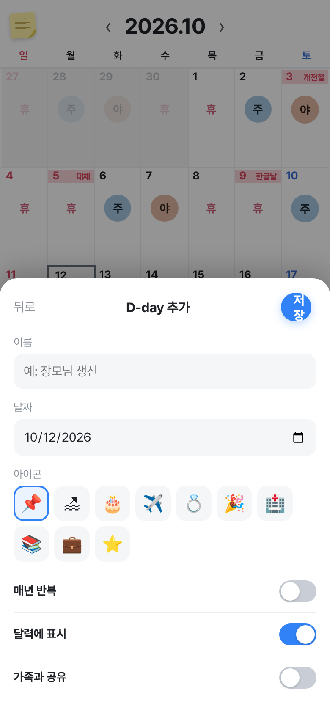
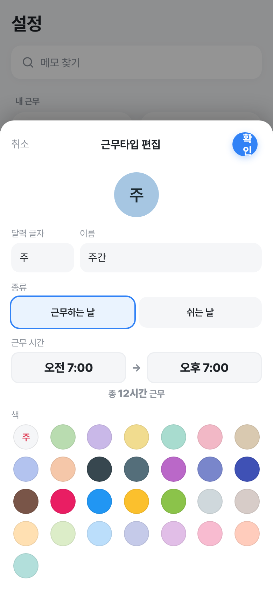
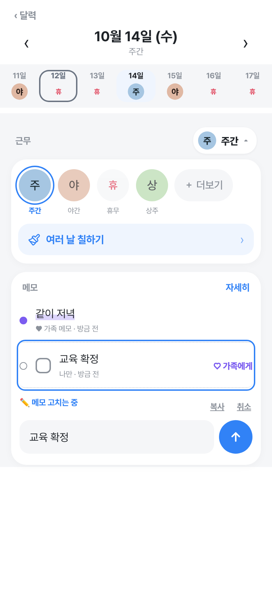
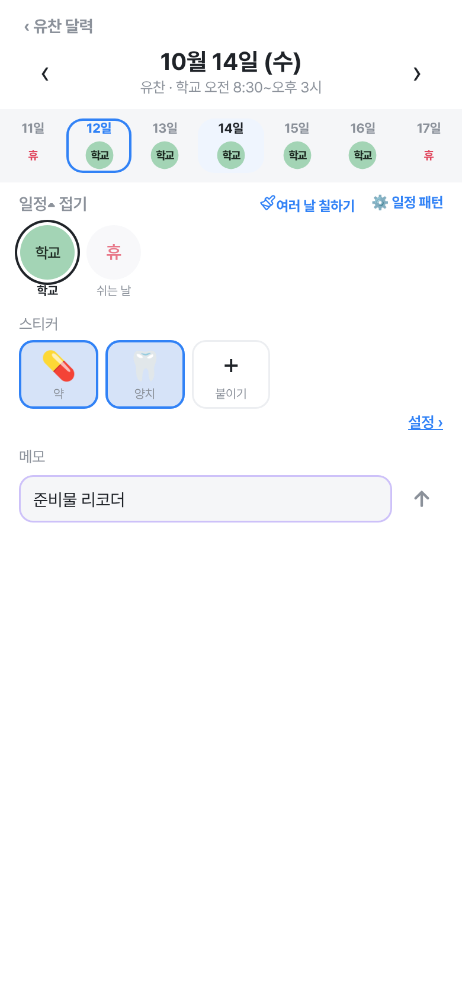
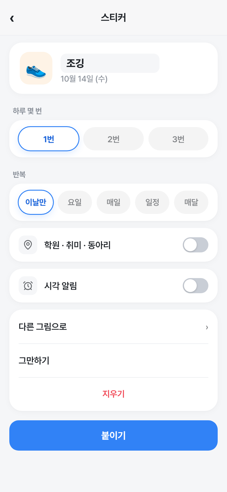
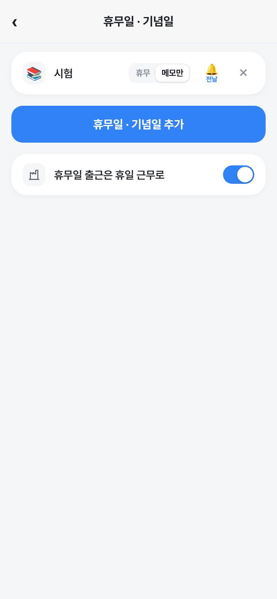

저장 알약이 찌그러져 "저 장" 두 줄 · 왼쪽 "뒤로" 글자

확인 알약 찌그러짐 · 왼쪽 "취소" 글자

🔒 줄만 아이콘 칸 없음 · 옮기기 줄 깨짐
"복사 · 취소" 밑줄 글자 · 작은 회색 안내 줄

"일정 ▴ 접기" · 파란 글자 버튼 2개 · "설정 ›" 밑줄 · 메모 입력칸이 내 것과 다른 옛 모양(테두리 + 맨 ↑)

"다른 그림으로 · 그만하기 · 지우기"만 아이콘 칸 없는 옛 목록

줄 안에 작은 "휴무 · 메모만" 고르기 · 🔔 이모지 · × 가 다닥다닥
